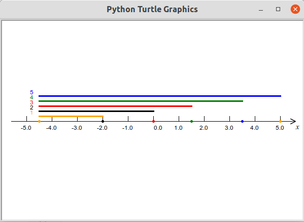
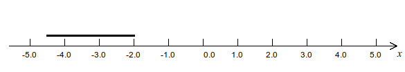
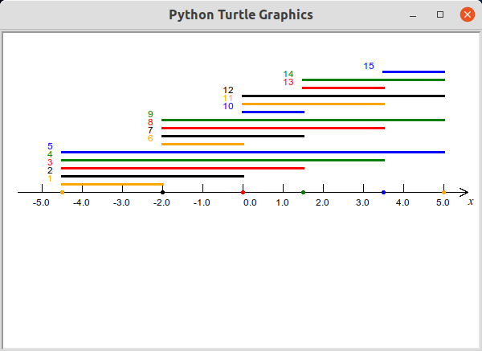
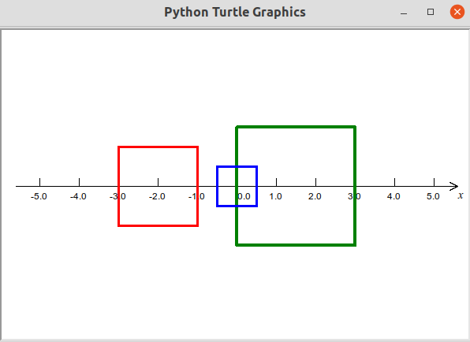
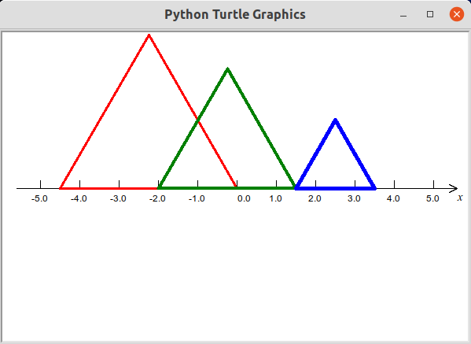

第15讲 编写方法绘制线段¶
Problem 问题描述¶
数轴上有6个点，对应的数字分别为[-4.5, -2.0, 0, 1.5, 3.5, 5.0]。连接其中任意的两个点可以形成一条线段。请问这6个点一共可形成多少条线段？参照下图，在宽高分别为600和400的绘图区绘制一条数轴，在数轴上标记这些点，并用不同颜色绘制出这6个点能形成的所有的线段并给每条线段标记一个序号。为避免绘制出的线段相互重合，每条线段间隔10个像素。图中已经绘制出了从-4.5开始到所有其它点的线段。
下面的代码已经完成了数轴绘制和对每一个点的标记。

[1]:
from turtle import setup, reset, pu, pd, bye, left, right, fd, bk, screensize
from turtle import goto, seth, write, ht, st, home, pen, dot
nums = [-4.5, -2.0, 0, 1.5, 3.5, 5.0]
colors = ["orange", "black", "red", "green", "blue"]
SCALE = 50
width, height = 600, 400 # 窗口的宽度和高度（单位为：像素）
setup(width, height, 0, 0)
[2]:
from qianglib import draw_axis, mark
reset()
draw_axis(width, height, SCALE)
nums = [-4.5, -2.0, 0, 1.5, 3.5, 5.0]
colors = ["orange", "black", "red", "green", "blue"]
i = 0
n_colors = len(colors)
while i < len(nums):
mark(nums[i], size=5, color=colors[i % n_colors])
i += 1
Math Background 数学背景¶
简单的排列组合
Prerequisites 预备知识¶
1. 排列和组合¶
4个小朋友Jason, Sophie, Tony, Yunzi按从前到后的次序排成一个纵队，可以排成多少个不一样的队伍？
[1]:
classmates = ["Jason", "Sophie", "Tony", "Yunzi"]
[ ]:
2. 充分理解goto(x, y)的意义¶
[ ]:
st() # show turtle
pu()
goto(100, 0) # turtle moved to 2.0 on x Axis.
dot(5, "red")
goto(100, 50) # turtle moved to 50 pixels above 2.0 on x Axis
dot(5, "blue")
goto(100, -50) # turtle moved to 50 pixles below 2.0 on x Axis
dot(5, "black")
ht()
3. 声明绘制一条线段的方法¶
考虑绘制一条线段需要知道哪些数据：线段的两个端点的位置，线的粗细以及颜色
给方法以及这些数据进行命名，方法名可定为
line，两个端点的位置可以分别为start,end，线的粗细设为linewidth，颜色为color为了避免绘出的线发生重叠，考虑将线段整体往上平移一定的距离，这个距离可以用变量
offset来表示，不要忘记了还有一个比例尺，用变量
scale表示。
这样我们可以如下声明绘制线条的方法:
def line(start, end, linewidth, color, offset, scale):
#TODO: need implementation 需要实现该方法
return
其中def是一个关键词，它表明将要声明一个方法line是方法名，上述所有在方法名后的括号()内声明的变量名又叫方法接受的参数。改行以冒号:结束，随后每一行代码相对于def都有缩进，直到最后执行return语句，完成这个方法或者缩进结束。冒号以后开始的直至return语句（或者缩进结束）构成了这个方法的方法体。
4. 实现先前声明的方法¶
实现一个方法指的是在方法体内部编写代码以完成方法设定的功能的过程。
在line方法体内，我们需要依次完成下面5个步骤： 1. 提起画笔 2. 移动画笔至要绘制线段的一个端点(start)，端点的位置与参数start、offset和scale的值有关。 3. 设定好画笔的颜色和粗细 4. 落下画笔准备绘制 5. 移动画笔至要绘制线段的另一个端点(end)，同样位置需要计算得到。
在上面的几个步骤中，设置画笔颜色和粗细这一步的次序可以相对随意些。
这样我们可以如下声明绘制线条的方法：
def line(start, end, linewidth, color, offset, scale):
pu() # 提起画笔
pen(pensize=linewidth, pencolor=color) # 设定画笔粗细和颜色
goto(start * scale, offset) # 移动画笔至某端点
pd() # 落下画笔准备绘图
goto(end * scale, offset) # 移动画笔值另端点完成线条绘制
return # 离开方法，返回。
有了这样的实现，我们就可以在代码中调用这个方法来完成一条线段的绘制，下面的代码使用黑色的画笔，3个像素的粗细来绘制一条从(-4.5*SCALE, 15)表示的点到（-2.0*SCALE, 15)表示的点之间的线段。这条线段位于x轴上方5个像素。如下图所示：
line(-4.5, -2.0, 3, "black", 15, SCALE)

在调用方法时，给方法提供的参数的次序需要与声明方法时的次序一致，否则会出错或预期以外的功能。
如果需要给绘制的线段进行标号，那么需要额外完成一些诸如：提起、移动画笔和绘制文字的步骤。同时我们还应该有标号使用的数字（或文字），需要新设定一个参数来表示它，可以用label来表示，下面的代码请读者自己添加这几行代码给这个方法添加线段标号的功能。
def line(start, end, linewidth, color, offset, scale, label):
# ..... # 省略了之前的一些代码
pu() # 提起画笔
goto(start * scale - 10, offset) # 移动画笔至要标号的位置
write(str(label), align="right") # 书写标号使用默认字体
return # 离开方法，返回
5. 练习：¶
补全line方法使得其可以对所绘制的线段进行标号
[ ]:
调用你刚刚完成的具有标号功能的
line方法，绘制一条线段。线段的起点对应数轴上-2.0表示的位置，终点对应数轴上5.0表示的位置，线宽选择5个像素，颜色从提供的颜色中任意选择一种，绘制的线段距离x轴的约50像素远，比例尺选择默认的比例尺，标号用你自己的名字字符串（例如“Celine”）。
[ ]:
3. Solution 编程求解¶

[3]:
def line(start, end, linewidth, color, offset, scale, label):
pu() # 提起画笔
pen(pensize=linewidth, pencolor=color) # 设定画笔粗细和颜色
goto(start * scale, offset) # 移动画笔至某端点
pd() # 落下画笔准备绘图
goto(end * scale, offset) # 移动画笔值另端点完成线条绘制
pu() # 提起画笔
goto(start * scale - 10, offset) # 移动画笔至要标号的位置
write(str(label), align="right") # 书写标号使用默认字体
return # 离开方法，返回
[4]:
nums = [-4.5, -2.0, 0, 1.5, 3.5, 5.0]
colors = ["orange", "black", "red", "green", "blue"]
i, j = 0, 1 # index i, j: start, end in nums
height = 10
n_drawn = 0
while i < len(nums) - 1:
j = i + 1
while j < len(nums):
line(nums[i], nums[j], 3, colors[n_drawn % n_colors], # 可以换行
height * (n_drawn + 1), SCALE, label=n_drawn+1)
n_drawn += 1
j += 1
i += 1
Summary 知识点小结¶
如何用循环嵌套循环来列举各种可能的排列组合
充分理解
goto方法及其接受的参数的意义学习编写接受参数的方法，理解参数的次序的重要性
学习调用自己编写的方法
复习
dot方法，复习比例尺概念
计算机小知识¶
暂缺
Assignments 作业¶
注意：本讲所有的作业涉及到绘图时均使用本讲示例所使用的数轴和比例尺。
Attention: All the following assignments concerning drawing are supposed to use the axis and scale that are used in this lecture.
创建（声明和实现）两个不同的方法计算两个不同的正整数之间所有正整数的和，其中一个方法得到的和包括给出的这两个正整数参数；另一个方法得到的和不包括给出的这两个正整数参数。在两个方法体内部输出得到的和。观察比较结果有什么不一样。并用下面的一系列数据来测试你编写的方法。 Create(declare and implement) two defferent methods to calculate the sum between two different positive integers. In one of the methods, the sum includes the two integers while in another method, the sumd doesn’t. Test your methods by using the data provided in below table and print out the result following the format in the table as well.
num1
num2
sum(include num1,2)
sum(exclude num1,2)
12
12
sum(inclu) = 24
sum(exclu) = 0
1
10
sum(inclu) = 55
sum(exclu) = 44
10
1
sum(inclu) = 55
sum(exclu) = 44
100
1000
sum(inclu) = 495550
sum(exclu) = 444450
[ ]:
# use this cell to create your methods
1 10
sum1 = 1 + 2 +3 + 。。。 +10
sum2 = 2 + 3 + 。。+ 9
[ ]:
# run your method(4 times for each method) with the test data in this cell.
仅编写一个方法来完成前一题。 Complete the previous question by only creating(declaring and implementing) one method.
提示：在创建这个新方法时，新增加一个参数，这个参数可以取两个不同的值，在方法体内不根据这个参数的值使用
if条件语句来动态的决定计算的和是否包括前两个正整数参数。 Hint: Add another parameter to indicate whether the sum include the two positive integers or not when declaring this new method. and In the method body, adjust your codes to handl this two scenarios by usingifstatement.
[ ]:
# use this cell to create your method
[ ]:
# run your method 8 times with the test data in this cell.
声明并且实现一个方法，该方法接受数轴上的一个点表示的数字作为参数1，另一个数作为参数2，完成以参数1为表示的位置为中心、参数2表示的数据为边长其中两条边平行于x轴的正方形的绘制，同时要求你实现的这个方法在绘制正方形时可以在调用方法时确定正方形边的颜色和线宽。 Declare and implement a method which accepts a number denoting a point in x axis as paramter1 and another number as paramter2 to draw a square with the parameter1 as the square’s center and parameter2 as its side length. Two sides of the drawn square should be parallel to X axis. Besides, your method should also be able to draw squares with different colors and line widths. 实现这个方法后，用下面的数据来绘制3个正方形。结果应如图所示： Use the following test data to draw three squares after you complete implementing the method. The result should be like the following figure:
center
side length
color
line width
-2.0
2.0
red
3
1.5
3.0
green
4
0.0
1.0
blue
3
要求：使用
goto方法来移动画笔，禁止使用left,right,fd,bk等方法。Requirement: Only use
gototo move pen, you are not allowed to use methods likeleft,right,fd,bk;提示：先计算出正方形每一个顶点的位置。
Hint: Calculate the position of each vertex of the square bfore you draw it. 
[ ]:
[ ]:
声明并且实现一个方法，该方法接受数轴上的两个不同的点表示的数字作为参数，完成以这两个点为端点的位于数轴上方的一个正三角形的绘制，同时要求你实现的这个方法在绘制正三角形时可以在调用方法时确定三角形边的颜色和线宽。 Declare and implement a method which accepts two numbers denoting two points in x axis as paramters to draw a regular triangle, one side of which is located on X axis and the other vertex is above the axis.Besides, your method should also be able to draw the triangles with different colors and line widths. 实现这个方法后，用下面的数据来绘制3个三角形。结果应如图所示： Use the following test data to draw three regular triangles after you complete implementing the method. The result should be like the following figure:
num1
num2
color
line width
-4.5
0.0
red
3
-2.0
1.5
green
4
1.5
3.5
blue
5
要求：尽可能不使用
left,right,fd,bk等方法，而使用goto方法来移动画笔。Requirement: Try to only use
gototo move pen instead of usingleft,right,fd,bk.提示：使用goto方法时，需要用到一个数值
1.732来帮助定位三角形的端点。请在你实现方法的代码里使用这个数值。Hint: You may need
1.732to help locate the position of a vertex. Please use this value when implementing your method.
[ ]:
[ ]:
[难，选做]用数字“1,2,3,4”这4个数字来组成一个5位数，其中每一个数至少用到1次，一共可以组成多少个5位数，其中最小的和最大的数分别是什么数？
[hard, optional]Comose a 5-digit positive integer using the number 1,2,3, and 4 on each bit. Each number should at least be used once. How many 5-digit positive number can be composed? what is the minimal and maximal integer?
提示1 Hint1:
123 = 1*100 + 2*10 + 3*1提示2: 可以使用一个
list类型的变量，把所有找到的5位数都存放在这个变量中，这个列表型变量的长度就是所有5位数的个数，列表中最大和最小的元素就分别是能形成的最大的和最小的5位数Hint2： You can use a
listvariable, put all the integers to it, then the length of this variable is the number of all integers. and minimal and maximal elements are the minimal and maximal value of all composed 5-digit integers.
[ ]: